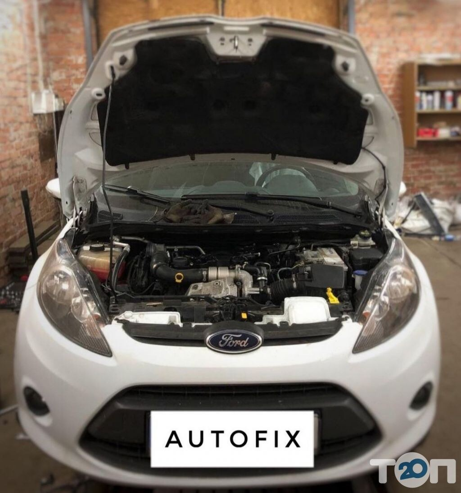

СТО / Ремонт авто · Хмельницький
Auto-Fix service.
Ремонт авто
м. Хмельницький, в.Гарнізонна. Зателефонуйте, щоб уточнити потрібні роботи та час приїзду.
096 415 5590Auto-Fix serviceХмельницький

Фото сервісу
Перемикайте фото стрілками. Натисніть на знімок, щоб відкрити повністю.
01 / РОБОТИ СЕРВІСУ
Послуги
Вартість і можливість виконання потрібних робіт уточнюйте телефоном.
Заміна оливи, фільтрів, ременів і свічок
Заряджання та заміна акумулятора
Токарні роботи
Кодування автомобілів VAG
Ціну уточнюйте за телефоном
Опишіть, що потрібно автомобілю, та уточніть вартість потрібних робіт.
02 / ІНФОРМАЦІЯ
Про сервіс
Перед приїздом
Зателефонуйте, щоб узгодити потрібні роботи та час приїзду.
Графік роботи
Графік роботи уточнюйте за телефоном.
Вартість робіт
Ціну уточнюйте за телефоном.
03 / ДОСВІД КЛІЄНТІВ
Відгуки клієнтів
Вибрані позитивні відгуки. Посилання на оригінали — у футері.
Відгук клієнтаТОП 20
Консультація та ремонт
Постійно обслуговую автомобіль у цих майстрів. Задоволений консультаціями та виконаним ремонтом.
Відгук клієнтаТОП 20
Вартість обслуговування
Роботу виконали швидко. Отриманий результат і вартість обслуговування влаштували.
04 / КОНТАКТИ
Хмельницький, в.Гарнізонна
Карта потребує інтернету. Адреса й посилання на маршрут — поруч.
ТЕЛЕФОН СЕРВІСУ
Зателефонуйте нам
Уточніть доступні роботи, вартість
і час приїзду.